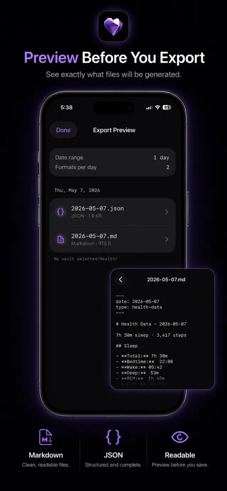
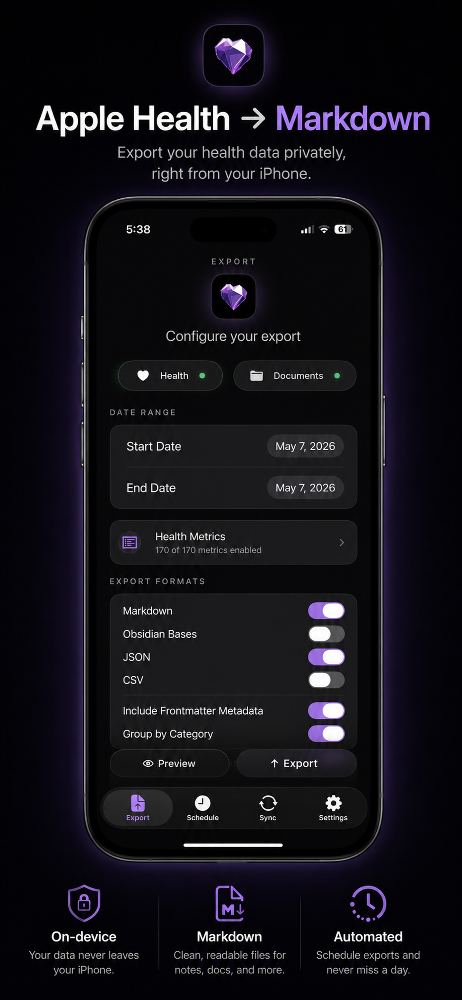
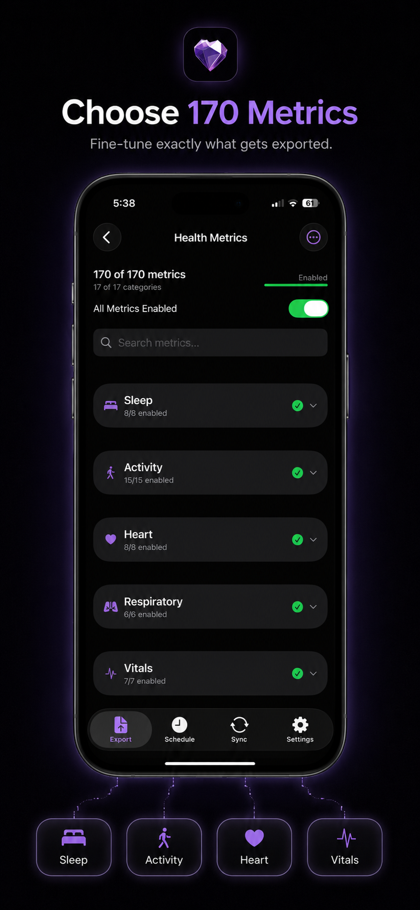
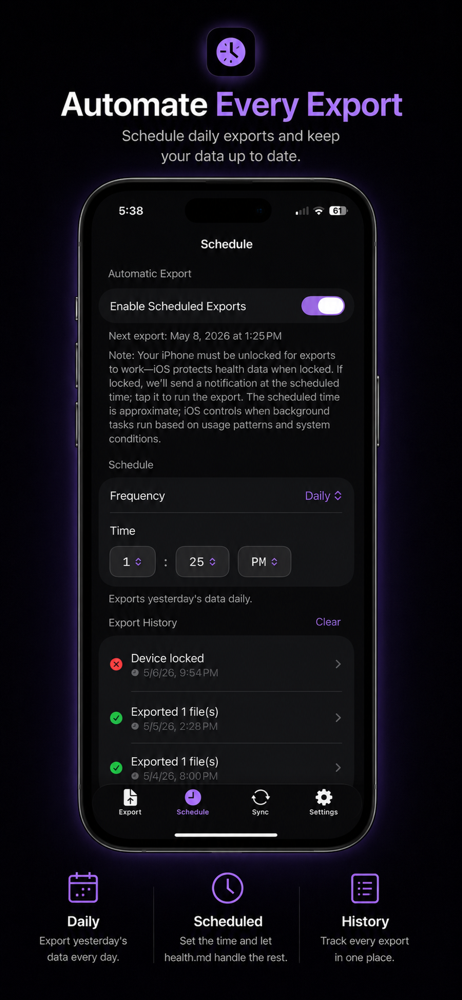
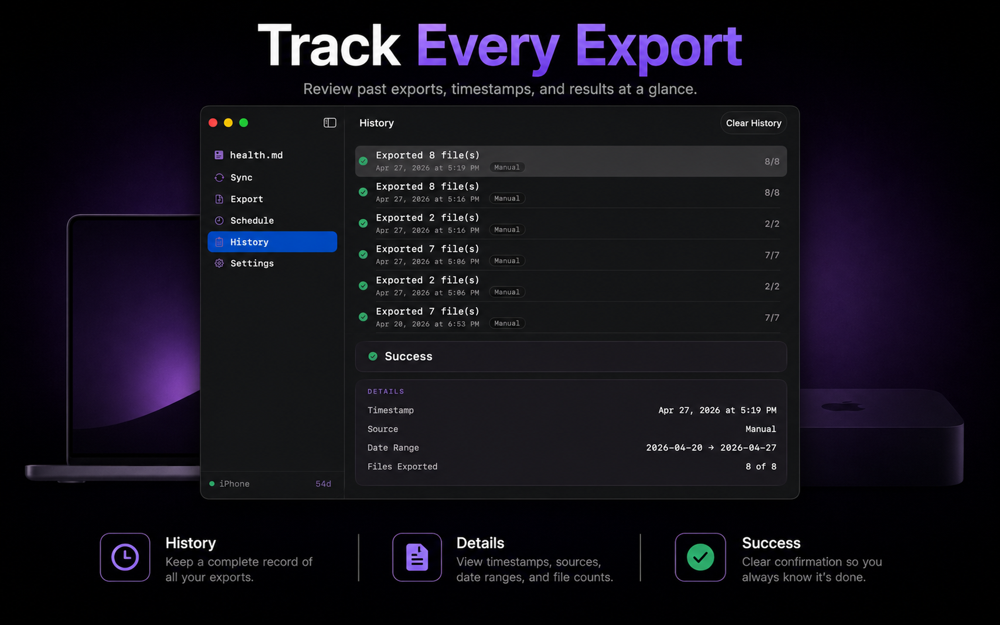

Connect Apple Health
Grant only the HealthKit categories you want to export from iPhone, Apple Watch, and connected apps.
Create files from the health data your Apple devices already collect. Choose metrics, preview the output, and write to Files, iCloud Drive, an Obsidian vault, or a local-network Mac destination.
Free download. Full Access is a one-time in-app purchase for unlimited exports, schedules, Mac destinations, and Shortcuts support.


steps: 12642sleep_total_hours: 7.31workout_count: 1type: health-data
Health.md is an export layer, not another dashboard. It reads HealthKit on your Apple device and writes plain files to destinations you control.
Grant only the HealthKit categories you want to export from iPhone, Apple Watch, and connected apps.
Select metrics, date ranges, filenames, folders, and any mix of Markdown, Obsidian Bases, CSV, and JSON.
Inspect values, metric names, units, and destination paths before Health.md writes the export.
Save to Files, iCloud Drive, an Obsidian vault, a file provider, or a nearby Mac on your local network.
One HealthKit snapshot can become multiple file types in one export. Keep readable daily notes beside structured data without changing tools.
Daily summaries with optional YAML frontmatter, category sections, workout tables, and templates.
Frontmatter-first notes designed for Obsidian Bases, properties, and database-style views.
Daily payloads grouped by health category, with timestamps for granular samples when available.
Rows shaped for spreadsheets, notebooks, scripts, and downstream reporting workflows.
---
date: 2026-06-12
type: health-data
steps: 12642
sleep_total_hours: 7.31
average_heart_rate: 68
workout_count: 1
---
# Health Data - 2026-06-12
## Sleep
- Total Sleep: 7.31 hours
## Activity
- Steps: 12642
- Active Calories: 604 kcal{
"date": "2026-06-12",
"type": "health-data",
"units": "metric",
"activity": {
"steps": 12642,
"activeCalories": 604
},
"sleep": {
"totalDuration": 26316
}
}
Date,Category,Metric,Value,Unit,Timestamp
2026-06-12,Activity,Steps,12642,count,Use Health.md as a controlled bridge between Apple Health and a folder-based personal knowledge system.
Merge selected metrics into existing daily note frontmatter and replace app-managed body sections when needed.
Create timestamped Markdown files for workouts, mood logs, vitals, medications, and event-like metrics.
Use placeholders such as {date}, {year}, {month}, {weekday}, {monthName}, and {quarter} to match your vault.



Open the dedicated visualization lab to pick chart types, tune colors, test Obsidian-style widths, and copy ready-to-use health-viz blocks.
The iPhone remains the HealthKit source. The Mac app acts as a local destination, writes files to a folder you choose, and keeps export history near your desktop workflow.
iPhone-configured export jobs travel to the Mac over nearby-device connectivity. No health-data cloud account is required.
Write to folders that only exist on your Mac, including local Obsidian vaults and analysis directories.
Export, sync status, schedule, settings, and history live in the Mac app with menu bar access.



Read the feature guide, inspect the metric reference, and check release notes before giving Health.md access to sensitive HealthKit categories.
Onboarding, exports, scheduling, Mac sync, Shortcuts, daily notes, individual tracking, and paywall behavior.
Metric IDs, HealthKit identifiers, units, aggregations, frontmatter keys, CSV shape, JSON shape, and Bases output.
Announcements and workflow articles for Health.md features, app updates, and Obsidian health-data systems.
Short answers for questions people ask before installing a health-data export tool.
No. Health.md does not run a health-data cloud service, require an account, or collect analytics. HealthKit reads happen on your Apple devices. Exported files may sync only through destinations you choose.
Full Access unlocks unlimited exports, scheduled exports, Mac destination workflows, and Shortcuts support. It is a one-time in-app purchase handled by StoreKit.
Use Restore Purchase from the app’s paywall or settings. StoreKit restores the Full Access transaction tied to your Apple ID.
Yes, when that data is already in Apple Health and you grant Health.md permission for the relevant categories.
No. Obsidian daily notes and Bases are supported, but Health.md also exports standard Markdown, CSV, and JSON files.
Yes. Choose only the formats you want for each export. Markdown and Obsidian output are optional.
The iPhone remains the HealthKit source. The Mac app acts as a local destination over nearby-device connectivity and writes files into the folder you choose.
No. iOS background refresh is opportunistic, so the scheduled time is a target. Health.md uses local notifications as a fallback when manual action is needed.
No. Health.md is a data export tool, not a medical device, diagnosis tool, healthcare provider, or emergency service.
App Store purchases and refunds are handled by Apple through the App Store refund process.
Download Health.md for free, choose the metrics that matter, preview the files, and unlock Full Access once when you are ready for unlimited exports.